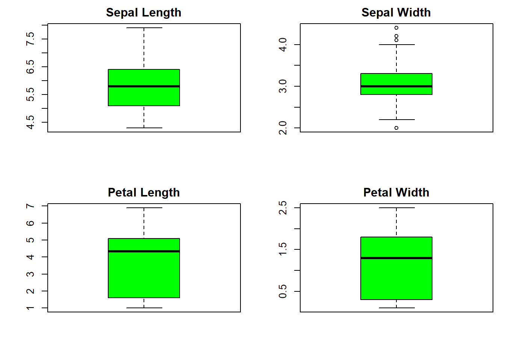
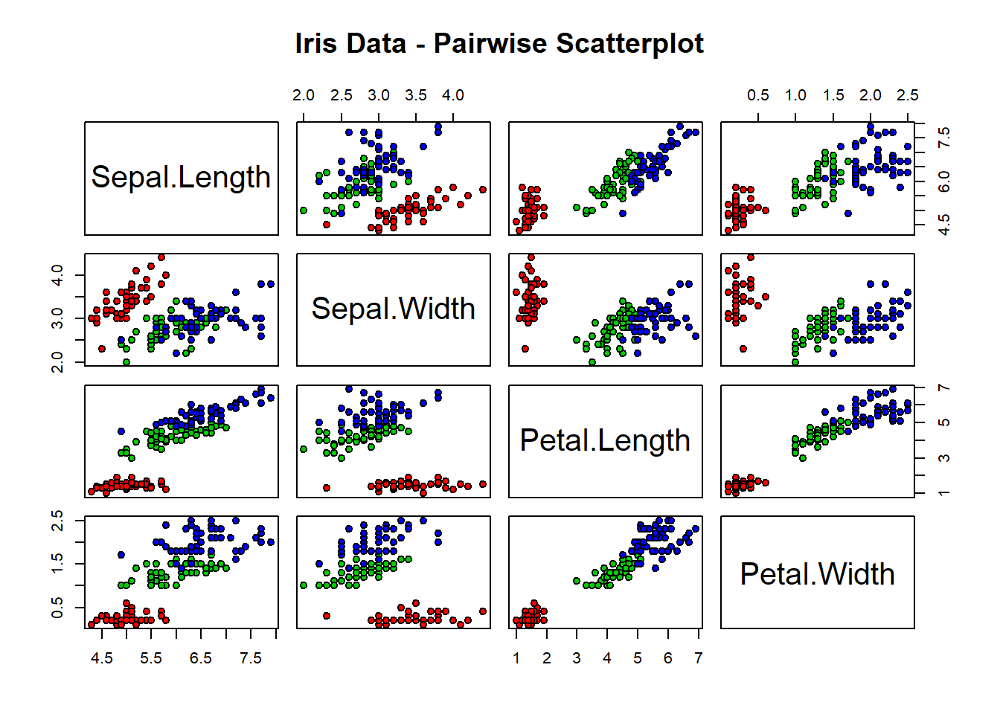

I’ve always found Random Forest to be a fascinating and robust machine learning technique, ideal for both classification and regression tasks. It’s like crafting a forest of decision trees where each tree contributes to a more accurate and generalized prediction. Recently, I delved into implementing a Random Forest model in RStudio, and here, I’ll share my experience using the well-known iris dataset.
RStudio has been my go-to for exploring machine learning models, and Random Forest was no exception. The iris dataset, a staple in R’s dataset collection, was my dataset of choice for this exploration.
Step 1: Installing and Loading Packages
library(randomForest)
randomForest 4.7-1.1
Type rfNews() to see new features/changes/bug fixes.
library(ggplot2)
Attaching package: 'ggplot2'
The following object is masked from 'package:randomForest':
margin
library(dplyr)
Attaching package: 'dplyr'
The following object is masked from 'package:randomForest':
combine
The following objects are masked from 'package:stats':
filter, lag
The following objects are masked from 'package:base':
intersect, setdiff, setequal, union
Sepal.Length Sepal.Width Petal.Length Petal.Width
Min. :4.300 Min. :2.000 Min. :1.000 Min. :0.100
1st Qu.:5.100 1st Qu.:2.800 1st Qu.:1.600 1st Qu.:0.300
Median :5.800 Median :3.000 Median :4.350 Median :1.300
Mean :5.843 Mean :3.057 Mean :3.758 Mean :1.199
3rd Qu.:6.400 3rd Qu.:3.300 3rd Qu.:5.100 3rd Qu.:1.800
Max. :7.900 Max. :4.400 Max. :6.900 Max. :2.500
Species
setosa :50
versicolor:50
virginica :50
Step 4: Visualizing the Data
To get a better grasp of the data distribution, I created some visualizations.
par(mfrow =c(2, 2), mar =c(4, 4, 2, 1))boxplot(iris$Sepal.Length, main ="Sepal Length",col ="green", border ="black")boxplot(iris$Sepal.Width, main ="Sepal Width",col ="green", border ="black")boxplot(iris$Petal.Length, main ="Petal Length",col ="green", border ="black")boxplot(iris$Petal.Width, main ="Petal Width",col ="green", border ="black")

Step 5: Examining Relationships
I wanted to explore relationships between variables, particularly focusing on how different features correlate with iris species. For this, scatterplots are excellent.
pairs(iris[1:4], main ="Iris Data - Pairwise Scatterplot", pch =21, bg =c("red", "green3", "blue")[unclass(iris$Species)])

Step 6: Building the Random Forest Model
set.seed(123) # For reproducibilityiris_rf <-randomForest(Species ~ ., data=iris, ntree=100)
Step 7: Evaluating the Model
print(iris_rf)
Call:
randomForest(formula = Species ~ ., data = iris, ntree = 100)
Type of random forest: classification
Number of trees: 100
No. of variables tried at each split: 2
OOB estimate of error rate: 4.67%
Confusion matrix:
setosa versicolor virginica class.error
setosa 50 0 0 0.00
versicolor 0 47 3 0.06
virginica 0 4 46 0.08